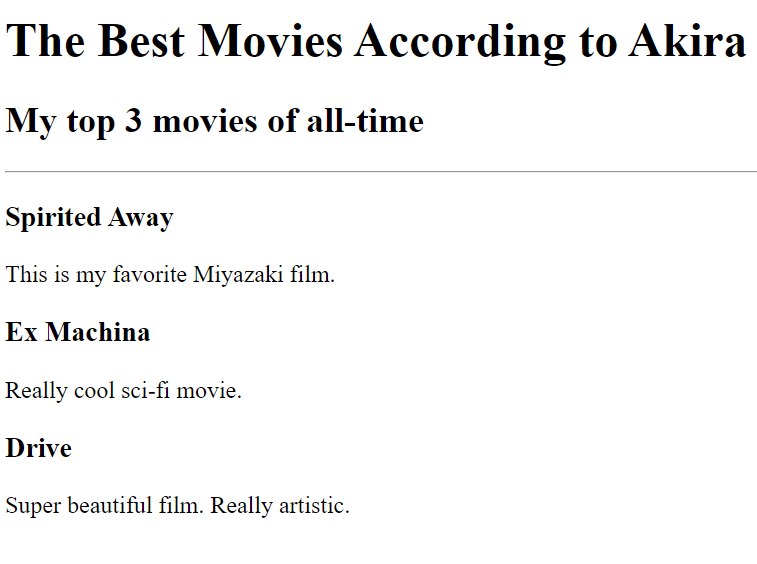
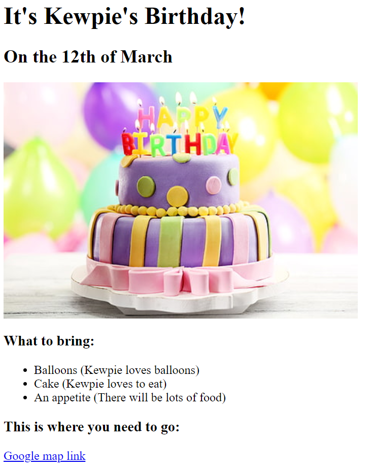

<!-- TODO 1: Create the HTML Boilerplate -->
<h1>Akira Kashiwagura's HTML Portfolio</h1>
<h2>I'm a Web Developer</h2>
<hr>
<!-- TODO 2: Add Your previous projects' HTML into the public folder -->
<h2>
    <a href="./public/movie-ranking.html"> Movie Ranking Project </a>
</h2>

<!-- screenshot of Movie Proj-->


<h2>
    <a href="./public/birthday-invite.html"> Birthday Invite Project </a>
</h2>

<!-- screenshot of Birthday Proj-->


<!-- TODO 3: Take screenshots of your project previews and add the images to the images folder -->
<hr>
<h3>
    <a href="./public/about.html">About Me</a>
    <a href="./public/contact.html"> Contact Me</a>
</h3>

<!-- TODO 6: Add images to show the project previews
HINT for TODO 6: You can use the height attribute set to 200 to make the image smaller:
https://developer.mozilla.org/en-US/docs/Web/HTML/Element/img#attr-height -->

<!-- TODO 7: Add the Contact Me and About Me page links -->